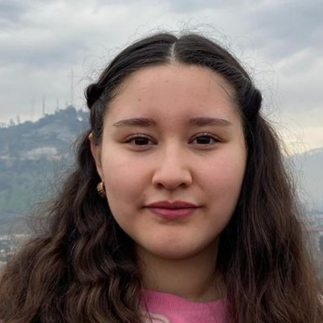

<!DOCTYPE html>
<html lang="es"></html>
    <head>
        <meta charset="UTF-8">
        <meta name="viewport" content="width=device-width, initial-scale=1.0">
        <title>Profile 2 | Belén Arias</title>
        <link rel ="stylesheet" href="css/profile2.css">
    </head>
    <body>
        <div class="container">
            <a href="home.html" class="back-link">← Volver al Grupo 2</a>
             <div class="profile-card">
      
                <div class="profile-info">
                    <h2>Belén Arias</h2>
                    <p>Diseñadora gráfica</p>
                    <p>B.mezasoto@uandresbello.edu</p>
             
            </div>
               <div class="section">
                    <h3>Sobre mí</h3>
                    <p>Apasionada de la creación y del arte. Estudiante de segundo año. Me gusta trabajar con packaging, diseño editorial e ilustración. Soy una persona pacífica, amable, responsable, comprometida con el trabajo y la ayuda a los demás.</p>
                    <div class="role-box">
                    <h3>Rol en el proyecto</h3>
                    <p>Como diseñadora y creadora gráfica, mi responsabilidad es contribuir al desarrollo del proyecto web colaborativo, aplicando los conocimientos adquiridos en la asignatura y trabajando en equipo para lograr un resultado de calidad.</p>
                </div>
                </div>
        </div>
    </body>


